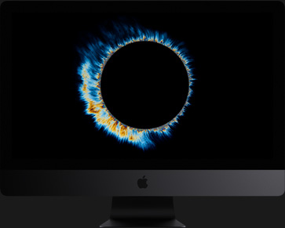

这台 iMac 是 18 核的。
对，你没看错。
配备 4 个核心的 iMac 已然足够不同凡响。而配备 8 个、10 个、14 个或 18 个核心的 iMac，全然是一种不同的存在。再加上最高可达 4.5GHz 的 Turbo Boost 速度，让 iMac Pro 拥有充分的能力和灵活性，很好地兼顾超凡的多核处理能力和出色的单线程性能。而有了 AVX-512 矢量指令集和先进的缓存架构，处理器还能够更快处理更多数据。因此，无论是渲染图片、剪辑 8K 视频、调整照片、制作实时音频特效，还是编译下一款五星好评的 app，所有操作都快如闪电。
<-
